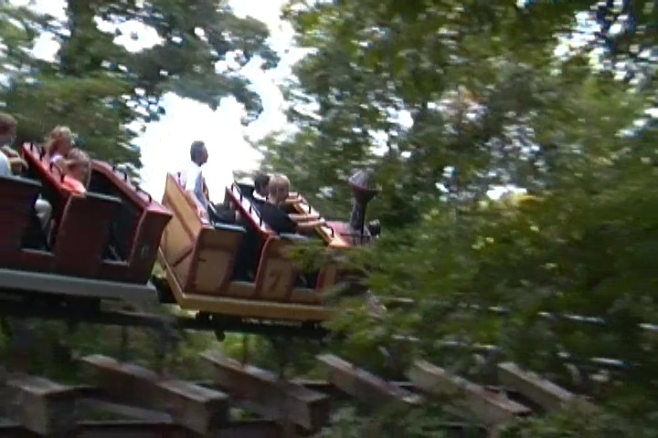
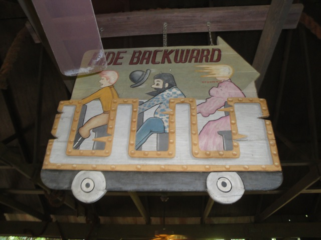
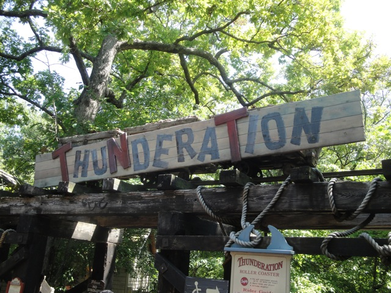

| |
.
Thunderation Review

We're here at Silver Dollar City. Today, we'll be reviewing Thunderation, the parks mine train. Now normally, a mine train is just a mine train, however, there is something very special about Thunderation. Yep. This is one of the best mine trains in the world. Yep. It's better than Big Thunder Mountain. However, it used to be better back when 2 of the cars go backwards. But they don't anymore. F*cking lame. =( After getting in the trains, we're off. We then go down a small curved drop, we're not too surprised, but its fun. We then go through a little straight track. Just having fun, heading down in the woods, when we head straight into a turn, giving us some fun laterals. After that fun turn through the trees, we keep having fun, we then start to go through a helix. You notice that the more and more we keep going, the faster and faster we appear to be going. We just keep going in this giant double helix, going faster and faster and faster, until SMACK!!!! We're now in a tunnel. And yes, you still continue to get more and more laterals in the tunnel. There's no time to just "TAKE THE TUNNEL!!!!", we have to finish the helix we started. We then leave the tunnel, pop back in the trees, hauling ass. We then continue to go through another slight downward helix, making us go faster and faster and faster. The trees start to blur together and just become a green blur as you realize that this isn't Cedar Creek Mine Ride or Goldrusher over here. After that we go through another turn and then, TAKE THE TUNNEL!!!!! AGAIN!!!!. Oh, and now we're stopped. We're now heading up the lifthill, and it's a big lifthill, showing us just how far we've dropped during that madness. We just keep climbing and climbing and climbing. Eventually, we reach the top of the lifthill. We then turn and go through some straight track. Just crawling, head straight towards a drop!! YAY!!! We just fell down another curved drop that certainly gave us some laterals and a nice sense of speed. We then roam through a couple of big turns before we go through the brake run for good. This is more than just a mine train. It's a really good coaster. It used to be even better while backwards, but even forewords, this ride kicks ass. This ride is not only one of the best mine trains in the world, but it is also a very underrated coaster. So yeah. Definetly check it out. It's really damn good.
7/10
Location: Silver Dollar City
Opened: 1993
Built by: Arrow
Last Ridden: July 19, 2013
Thunderation Photos



Home
|